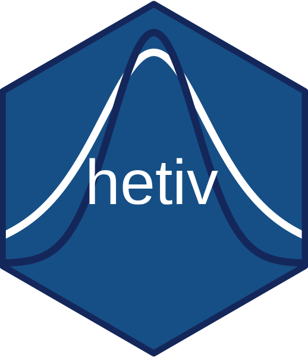

Estimate impulse responses via heteroskedasticity-based IV local projections
Source:R/hetiv.R
hetiv.RdEstimates impulse response functions (IRFs) using recursive heteroskedasticity-IV identification (Rigobon, 2003; Rigobon and Sack, 2004; Lewis, 2022; Burri and Kaufmann, 2026a, 2026b) combined with local projections (Jorda, 2005). Identification exploits the difference in variance between policy event days and control days to construct instruments for the endogenous variables.
Usage
hetiv(
y,
O,
X = NULL,
Ind,
P,
H,
E = 1,
norm = 1,
interact = FALSE,
cum = FALSE,
Hstep = 1,
cov_type = "HC0",
details = FALSE
)Arguments
- y
Numeric matrix of stationary outcome variables (T x N). The effect on the first variable in each dimension is normalized to unity at horizon 0. These variables are also used to construct heteroskedasticity-based instruments and for recursive ordering to identify multiple dimensions.
- O
Numeric matrix of information set variables (T x M). May be identical to
y. Included as lags 1 throughP.- X
Numeric matrix of deterministic variables (T x K). For example, time trend, seasonal dummies or other deterministic controls. Included as is (no lags). A constant is included by default.
- Ind
Integer vector of length T, event indicator:
0Control day (no event)1Policy day (event)2Contaminated control day (excluded from estimation)
- P
Integer. Maximum lag order for the information set. Set to
0for no lags (regression on deterministic terms only).- H
Integer. Maximum horizon (in periods) up to which IRFs are estimated.
- E
Integer. Number of shock dimensions to identify via recursive ordering.
- norm
Numeric scalar. Normalize the impact response of the first variable to a specific value. Set to
1for standard unit-effect normalization.- interact
Logical. If
TRUE, lagged information set variables are interacted with event/non-event dummies.- cum
Logical vector of length N. For each variable in
y, whether to report the cumulative impulse response instead of the level response. If only one provided, applied to all impulse responses.- Hstep
Integer. Step size between horizons. The default
1estimates all horizons 0 through H - 1. Values greater than 1 estimate only the selected horizons.- cov_type
Covariance estimator for local-projection standard errors:
"HC0"(default) for heteroskedasticity-robust standard errors or"NW"for Newey-West HAC standard errors."HC0"is the default because Montiel Olea et al. (2025) show that heteroskedasticity-robust standard errors suffice for local-projection impulse responses under weak conditions, even though multi-step forecast errors are typically serially correlated."NW"remains available as an optional HAC robustness check.- details
Logical. If
TRUE, code saves detailed IV results, which is slightly slower. if set toFALSE, returns only impulse response and standard error (e.g. for bootstrap)
Value
A named list with the following elements:
irfArray (H x N x E) of estimated impulse responses.
seArray (H x N x E) of local-projection standard errors.
IVResList of
ivregmodel objects, one per horizon, variable, and shock dimension.ObsData frame with observation counts:
Tp(policy days),Tc(control days),To(contaminated days),Tt(total used).MethodCharacter string
"Heteroscedasticity-IV".etData frame of OLS residuals on event days (used for covariance estimation and shock extraction).
SigCovariance matrix of residuals on event days (used for shock extraction).
SigRCovariance matrix of residuals on control days, or
NAif unavailable (used for shock extraction).PsiImpact matrix (N x E), equal to
irf[1, , ]. By the package's indexing conventionHSeriesstarts at 1, so the first LP useslead(y, 0)(the contemporaneous value) and is labelled horizon 0;irf[1, , ]is therefore always the impact response.WeakDataData frame of endogenous variables and instruments for the Lewis-Mertens (2025) weak instrument test.
Details
For E > 1, identification is recursive and order-dependent: the
column order of y defines both the shock ordering and the normalization
variable for each shock dimension.
References
Burri, M. and D. Kaufmann (2026a). Measuring monetary policy shocks. Economics Letters. doi:10.1016/j.econlet.2026.113091
Burri, M. and D. Kaufmann (2026b). Multiple monetary policy shocks from daily data: A heteroskedasticity IV approach. IRENE Working Papers 26-06, IRENE Institute of Economic Research, University of Neuchatel.
Jorda, O. (2005). Estimation and inference of impulse responses by local projections. American Economic Review, 95(1), 161-182.
Lewis, D. J. (2022). Robust inference in models identified via heteroskedasticity. Review of Economics and Statistics, 104(3), 510-524.
Lewis, D. J. and Mertens, K. (2025). A robust test for weak instruments for 2SLS with multiple endogenous regressors. The Review of Economic Studies, DOI: 10.1093/restud/rdaf103
Montiel Olea, J. L., M. Plagborg-Moller, E. Qian, and C. K. Wolf (2025). Local projections or VARs? A primer for macroeconomists. NBER Working Paper No. 33871.
Rigobon, R. (2003). Identification through heteroskedasticity. Review of Economics and Statistics, 85(4), 777-792.
Rigobon, R. and Sack, B. (2004). The impact of monetary policy on asset prices. Journal of Monetary Economics, 51(8), 1553-1575.